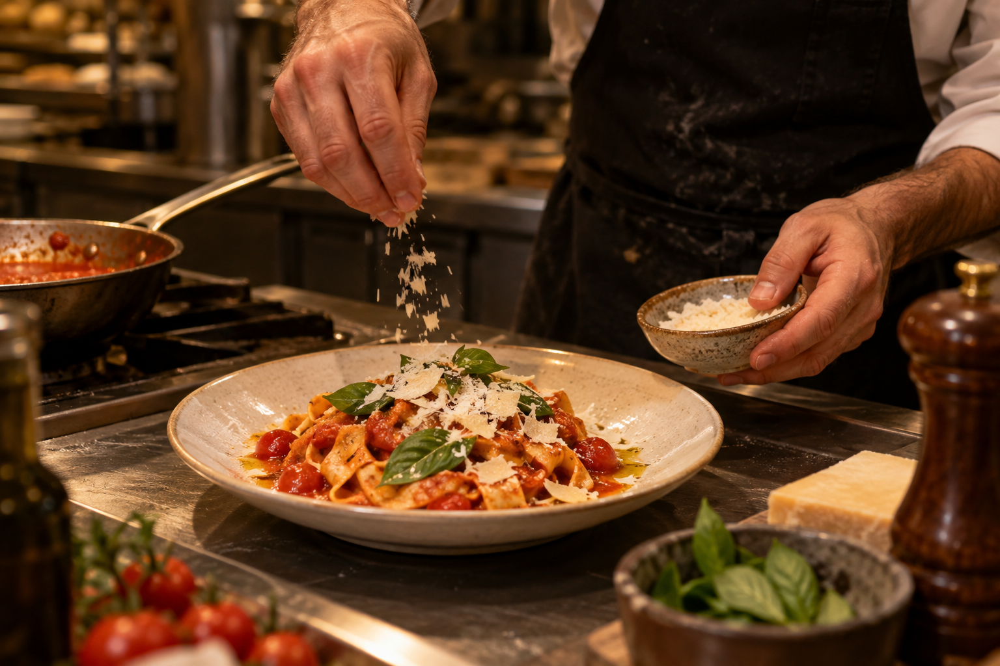

01
Tagliatelle al ragù
Домашняя паста с томлёным рагу, пармезаном и свежим базиликом.
Milano · cucina italiana
Итальянская страсть, поданная с безупречным вкусом.
Забронировать столLa nostra storia
О ресторане
Rosso Rubino — ресторан для долгих разговоров, вина и итальянских блюд, в которых важна каждая деталь. Здесь золото света встречается с бархатом красного, а ужин превращается в маленькое путешествие.
Открыть менюLa cucina
Сезонные продукты, точность вкуса и щедрость средиземноморской кухни.
Домашняя паста с томлёным рагу, пармезаном и свежим базиликом.

Нежные равиоли в сливочном масле с шалфеем, пармезаном и стружкой трюфеля.

Томлёная телячья голяшка с шафрановым ризотто и ароматной гремолатой.
L'atmosfera
Мы придумали пространство, где хочется задержаться: у огня, в глубине зала или у длинной стойки под мягким светом.


Lo chef
Marco
Bellini
Шеф Марко собирает рецепты Италии как личные истории: бережно, но без ностальгии. В его меню классика получает новое, точное звучание.
Prenotazione
Оставьте заявку — мы подтвердим столик в ближайшее время.